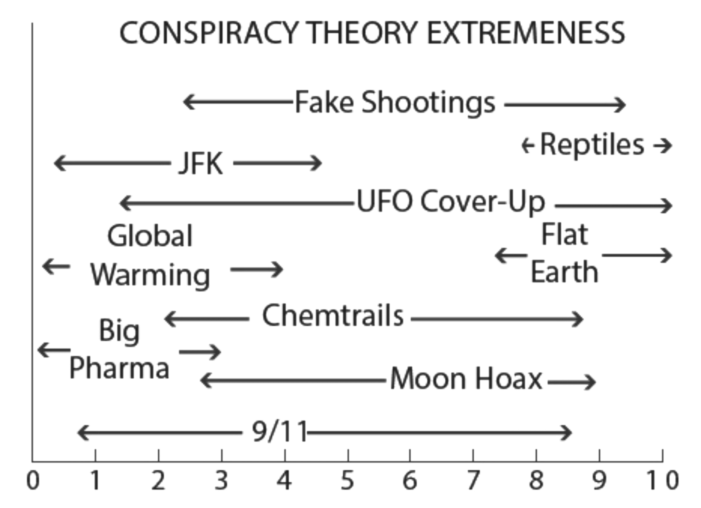

<!DOCTYPE html>
<html lang="en">
  <head>
      <title>Conspiracy Spectrums - For better conversations about conspiracy theories</title>
      <meta charset="UTF-8">
      <link rel="stylesheet" href="style.css">
      <link rel="preconnect" href="https://fonts.googleapis.com">
      <link rel="preconnect" href="https://fonts.gstatic.com" crossorigin>
      <link href="https://fonts.googleapis.com/css2?family=Source+Sans+Pro:wght@400;900&display=swap" rel="stylesheet">
      <meta name="viewport" content="width=device-width, initial-scale=1">
  </head>
  <body>
    <script type="module">

import { h, Component, render } from 'https://unpkg.com/preact?module';
import htm from 'https://unpkg.com/htm?module';

const shuffle = (unshuffled) => unshuffled
    .map((value) => ({ value, sort: Math.random() }))
    .sort((a, b) => a.sort - b.sort)
    .map(({ value }) => value);


const sortStatements = (unsorted) => unsorted
    .sort((a, b) => {
        const [aKey, aStatement, aConfidence] = a;
        const [bKey, bStatement, bConfidence] = b;
        if (aConfidence == bConfidence) {
            return aStatement > bStatement ? 1 : -1;
        } else {
            return aConfidence > bConfidence ? 1 : -1;
        }
    });

//  .map(i => i == null ? "/" : ".▁▂▃▄▄▅▆▇█!"[i])
const sparkline = (zerototens) => zerototens
    .filter(i => i == null || (i => i >= 0 && i <= 10))
    .map(i => i == null ? "/" : "0123456789X"[i])
    .join('');

const encodeBase64 = (str) => {
    return window.btoa(unescape(encodeURIComponent(str)));
}
const decodeBase64 = (str) => {
  return decodeURIComponent(escape(window.atob( str )));
}

class App extends Component {

    constructor() {
        super();
        this.colors = this.getColorScale();
        this.spectrums = {
            'covid_19': {
                id: 'covid_19',
                name: 'COVID-19',
                version: '1.0',
                description: "This is a list of COVID-19 beliefs that are at least partly conspiratorial.",
                statements: [
                    ['hx', "COVID-19 doesn't exist; it's 100% a hoax"],
                    ['fl', "COVID-19 is no more dangerous than influenza"],
                    ['dg', "COVID-19 vaccines pose a greater threat than the disease"],
                    ['5g', "COVID-19 symptoms are actually caused by 5G towers"],
                    ['bi', "COVID-19 was created as a bioweapon"],
                    ['rs', "COVID-19 escaped from a medical research program"],
                    ['pw', "COVID-19 emergency powers will never be rescinded"],
                    ['ex', "COVID-19 is less dangerous than we have been told"],
                    ['nt', "COVID-19 vaccines have not been properly tested"],
                    ['cs', "COVID-19 cures are being suppressed for profit"],
                    ['lh', "COVID-19 lockdowns do more harm than good"],
                    ['ud', "COVID-19 is being exploited to make people mistrust democratic institutions"],
                    ['dp', "COVID-19 is being exploited to increase polarisation"],
                    ['cp', "COVID-19 is being exploited to for corporate profit"],
                    ['ty', "COVID-19 is being exploited to create tyranny"],
                    ['nb', "COVID-19 vaccines injections contain nanobots"],
                    ['em', "COVID-19 experts are generally mistaken"],
                    ['cv', "COVID-19 is cover story for something else that's happening"],
                    ['mm', "COVID-19 is being misrepresented by journalists"],
                    ['gc', "COVID-19 is a global conspiracy"],
                ],
            },
            'us_2018': {
                id: 'us_2018',
                name: 'US 2018',
                version: '1.0',
                description: "This top-ten list of mostly-American conspiracy theories appears in Chapter 2 " + 
                    "of 'Escaping the Rabbit Hole' (Mick West, 2018). An updated list would include news media, " +
                    "electoral fraud, COVID-19, and QAnon.",
                statements: [
                    ['bp', "pharmaceutical companies conspire to maximise profit by selling drugs that people do not actually need"],
                    ['gw', "climate change is not caused by man-made carbon emissions, and there's some other motive for claiming this"],
                    ['jf', "people in addition to Lee Harvey Oswald were involved in the assassination of John F. Kennedy"],
                    ['wt', "the events of 9/11 were arranged by elements within the US government"],
                    ['ct', "the trails left behind aircraft are part of a secret spraying program"],
                    ['ff', "shootings like Sandy Hook and Las Vegas either never happened or were arranged by people in power"],
                    ['ml', "the moon landings were faked in a movie studio"],
                    ['uf', "the US government has contact with aliens or crashed alien aircraft and is keeping it secret"],
                    ['fe', "the earth is flat, but governments, business, and scientists all pretend it is a globe"],
                    ['ro', "the ruling classes are a race of shape-shifting trans-dimensional reptiles"],
                ],
            },
        };
        this.state = {
            spectrum: null,
            format: 'shuffle',
        };
        this.checkUrl();
    }

    checkUrl() {
        const data = this.readUrl();
        if ('ID' in data) {
            this.initialize(data.ID, data);
        }
    }

    initialize(spectrumId, statements) {
        const spectrum = spectrumId in this.spectrums
            ? this.spectrums[spectrumId]
            : null;
        if (spectrum == null) {
            this.setState({spectrum: null});
            return;
        }
        const useStatements = statements != null ? statements : {};
        const newStatements = spectrum.statements.map(tuple => {
            const [key, statement] = tuple;
            const newConfidence = key in useStatements 
                ? statements[key]
               : 5;
            return [key, statement, newConfidence];
        });
        const newSpectrum = {
            ...spectrum,
            statements: shuffle(newStatements),
            format: 'shuffle',
        };
        this.setState({spectrum: newSpectrum});
    }

    getSparkline() {
        //  Return null for divider, confidence integer for other rows
        const confidences = this.state.spectrum.statements.map(tuple => {
            const [key, statement, confidence] = tuple;
            return key == '__' ? null : confidence;
        });
        return sparkline(confidences);
    }

    //  Pastel scheme from: 
    //  https://www.schemecolor.com/beautiful-light-pastels-color-scheme.php
    getColorScale() {
        const pastels = ['#DEFDE0', '#DEF3FD', '#F0DEFD', '#FDDFDF', '#FCF7DE'];
        const scale = chroma.scale(pastels).mode('lrgb').colors(11);
        return scale;
    }

    readUrl() {
        const hash = window.location.hash.slice(1);
        const uri = decodeBase64(hash);
        const pairs = uri.split('&').reduce((acc, pair) => {
            const [key, val] = pair.split('=');
            acc[key] = Number.isInteger(parseInt(val)) ? parseInt(val) : val;
            return acc;
        }, {});
        return pairs;
    }
    
    getScore() {
        const rowsThatCount = this.state.spectrum.statements.filter(val => val[0] != '__');
        const sum = rowsThatCount.reduce((acc, val) => {
            return acc + val[2];
        }, 0);
        return Math.round(sum * 10 / rowsThatCount.length);
    }

    shuffleStatements() {
        const spectrum = this.state.spectrum;
        if (this.spectrum !== null) {
            this.setState({
                spectrum: {
                    ...spectrum,
                    format: 'shuffle',
                    statements: shuffle(spectrum.statements),
                },
            });
        }
    }

    sortByConfidence() {
        const sorted = sortStatements(this.state.spectrum.statements);
        this.setState({
            spectrum: {
                ...this.state.spectrum,
                statements: sorted,
                format: 'sort',
            }
        });
    }

    setConfidence(key, confidence) {
        const intConfidence = parseInt(confidence) || 0;
        const newStatements = this.state.spectrum.statements.map((tuple) => {
            const [thisKey, thisStatement, thisConfidence] = tuple;
            return [thisKey, thisStatement, thisKey == key ? intConfidence : thisConfidence];
        });
        const sorted = this.state.spectrum.format == 'shuffle'
            ? newStatements
            : sortStatements(newStatements)
        this.setState({
            spectrum: {
                ...this.state.spectrum,
                statements: sorted,
            },
        });
    }

    writeUrl() {
        const spectrum = this.state.spectrum;
        const urlParts = spectrum?.statements.map((tuple) => {
            const [thisKey, thisStatement, thisConfidence] = tuple;
            return '&' + thisKey + '=' + thisConfidence;
        });
        const data = 'ID=' + spectrum?.id + urlParts.join('');
        return '?#' + encodeBase64(data);
    }

    toggleDivider() {
        if (this.hasDivider()) {
            this.removeDivider();
        } else {
            this.addDivider();
        }
    }

    hasDivider() {
        const spectrum = this.state.spectrum;
        return spectrum.statements.reduce((acc, val) => {
            return val[0] == '__' || acc;
        }, false);
    }

    addDivider() {
        const spectrum = this.state.spectrum;
        const newStatements = [
            ...spectrum.statements,
            ['__', '--- D I V I D E R ---', 7]
        ];
        const sorted = sortStatements(newStatements);
        this.setState({
            spectrum: {
                ...spectrum,
                statements: sorted,
            }
        });
    }

    removeDivider() {
        const spectrum = this.state.spectrum;
        this.setState({
            spectrum: {
                ...spectrum,
                statements: spectrum.statements.filter(statement => {
                    return statement[0] != '__';
                }),
            }
        });
    }

    render() {
        const spectrum = this.state.spectrum;
        const overview = spectrum
            ? (this.getSparkline() + ' ' + this.getScore() + '% v.' + spectrum.version)
            : '';
        return html`
            <div class="page-wrapper">
            ${!spectrum && html`

                <h1>Conspiracy Spectrums</h1>

                <p style="margin: 2rem;">
                ${Object.entries(this.spectrums).map(([key, spec]) => html`
                    <button class="button button-primary" onclick=${() => this.initialize(key)}>${spec.name}</button>
                `)}
                </p>

                <p class="question">For better conversations about conspiracy theories</p>

                <p>The idea of conspiracy spectrums comes from Mick West's 2018
                book <i>Escaping the Rabbit Hole</i>. A spectrum shows the
                degree of confidence that a person gives to each belief in a
                group, and is unique to that individual. Spectrums are a useful
                tool for improving conversations about conspiracy theories,
                because:</p>

                <!-- 
                <figure>
                    
                    <figcaption>A conspiracy spectrum from <i>Escaping the Rabbit Hole</i> (ch. 2).</figcaption>
                </figure>

                <p>The beliefs in this spectrum appear in the 'US 2018'
                conspiracy spectrum on this webpage (see above).</p>
                -->

                <ol>

                <li>We all believe in some conspiracies and disbelieve in
                others. Recognising this take some of the sting out of the
                term 'conspiracy theory'.</li>

                <blockquote>
                Conspiracies are very real, of course. The fact that powerful
                people make secret plans at the expense of the general public
                should come as no surprise to anyone. Nixon conspired to cover
                up Watergate. The CIA staged “false flag” operations in 1953 to
                bring down the Iranian government. Powerful men in the Reagan
                administration conspired to illegally trade arms with Iran to
                finance the Nicaraguan Contras. Enron conspired to shut down
                power stations to raise the price of electricity. Executives
                from Archer Daniels Midland conspired to fix the price of
                animal feed. People within the second Bush administration
                conspired to present sketchy evidence as conclusive proof of
                WMDs to justify the invasion of Iraq. Politicians tacitly (and
                sometimes overtly) conspire with wealthy individuals
                and corporations, helping pass favorable legislation in
                exchange for campaign contributions, or sometimes just bribes.
                The prison industry conspires to get those politicians to
                incarcerate more people simply to maximize their profits.
                <div class="caption">(West 2018, <i>Introduction</i>)</div>
                </blockquote>

                <li>Conspiracy spectrums recognise different degrees of
                conviction or confidence or seriousness. Gauging a friend's
                confidence on different issues will avoid misunderstandings and
                frustration.</li>

                <li>It will make your conversations harder if you assume
                someone believes in more (or larger) conspiracies than they
                actually do. They may think you're mocking or misrepresenting
                them, lumping them in with the crazies. They may think that
                extreme ideas are used to discredit the sensible ones.  And it
                will equally hamper your conversations if you assume that they
                believe in fewer (or smaller) conspiracies than they actually
                do, since bigger conspiracies will override smaller ones.
                There's no point discussing whether COVID has been
                <i>exploited</i> for commercial gain if a person thinks
                it was <i>created</i> for that purpose.</li>

                <li>West suggests that any individual will be able to draw a
                dividing line between what they see as sensible theories on the
                one hand, and silly theories or disinformation on the other.
                Informative discussions will most likely happen near this
                line.</li>

                <li>Putting degrees of confidence on a spectrum may also lead to
                better understanding by prompting a range of questions. Note this 
                works best if you're seeking understanding, not gotchas and
                zingers.</li>

                <ol>
                    <li>Why don't you think this deserves complete confidence?</li>
                    <li>Why do you think this is more likely than that?</li>
                    <li>Can those two both be equally high in confidence?
                    (Don't they contradict each other?)</li>
                    <li>What future discoveries would make you more confident
                    about this? Or less?</li>
                </ol>

                </ol>
                `}

            ${spectrum && html`
                <p>
                    <button class="button button-primary" onclick=${() => this.initialize(null)}>Conspiracy Spectrums</button>
                    <button class="button button-decorative">${spectrum.name}</button>
                </p>
                <p class="question">On a scale from total disbelief to absolute certainty, how confident are you that:</p>
                <div class="spectrum">
                ${spectrum.statements.map(([key, statement, confidence]) => {
                    const rowColor = key == '__' ? '#f7a6c8' : this.colors[confidence];
                    const rowStyle = spectrum?.format == 'shuffle' ? '' : 'background-color:' + rowColor;
                    const rowDivider = key == '__' ? " spectrum-divider" : "";
                    if (spectrum.format == 'shuffle' && key == '__') {
                        return null; // Don't show divider
                    }
                    return html`
                    <div class="spectrum-row">
                        <div class=${"spectrum-cell slider-container" + rowDivider} style=${rowStyle}>
                            <input type="range" class="slider" min="0" max="10"
                                value=${confidence} id=${key}
                                onchange=${(e) => this.setConfidence(key, e.target.value)}
                            />
                        </div>
                        <div class=${"spectrum-cell" + rowDivider}>${statement}</div>
                    </div>
                    `}
                )}
                </div>

                <ul>
                    <li>Use <a target="_blank" href=${this.writeUrl()}>this link</a> to bookmark your answers or share them with others.</li>
                </ul>

                <p>
                    <button class="button" onclick=${() => this.shuffleStatements()}>Shuffle</button>
                    <button class="button" onclick=${() => this.sortByConfidence()}>Sort</button>

                ${spectrum?.format == 'sort' && html`
                    <button class="button" onclick=${() => this.toggleDivider()}>${this.hasDivider() ? "Remove Divider" : "Add Divider"}</button>
                `}
                </p>

                <ul>
                    ${this.hasDivider() && spectrum.format != 'shuffle' && html`
                    <li>The divider can be moved around to separate silly theories and misinformation (above) from sensible theories (below).</li>
                    `}
                    <li>${spectrum.description}</li>
                </ul>

                ${spectrum?.format == 'sort' && html`
                <div class="byline">Overview: ${overview}</div>
                `}

            `}
            <div class="byline">Send comments or ideas to @<a href="https://twitter.com/eukras">eukras</a> on Twitter.</div>

            </div>
            `;
        }
    };


      const html = htm.bind(h);
      render(html`<${App} />`, document.body);

    </script>
    <script src="https://cdnjs.cloudflare.com/ajax/libs/chroma-js/2.1.2/chroma.min.js" integrity="sha512-8TVPS0EFkkmtT6yPb5K4csnSt3tjbKRrs0F8gvTNKv2OxOcwDO7+Klkz86gMVrzfqtZos5N2a+k+r9D+hlccmQ==" crossorigin="anonymous" referrerpolicy="no-referrer"></script>
  </body>
</html>
